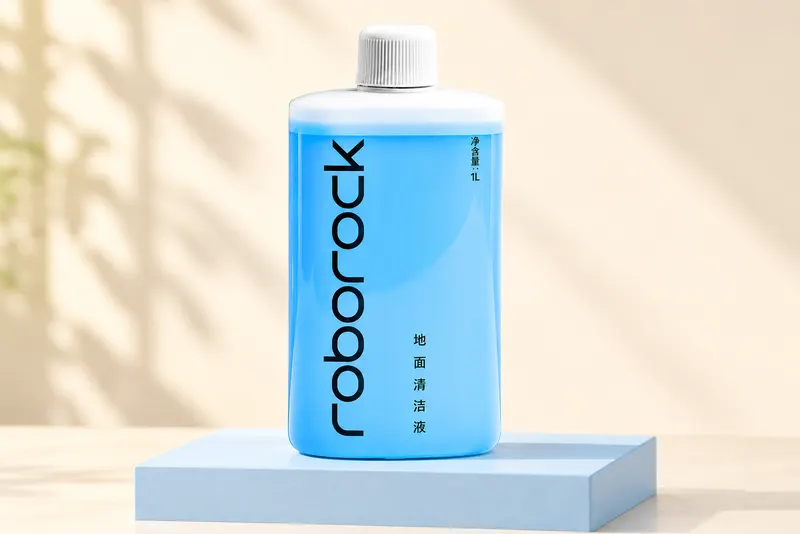

로보락 (Roborock)
로보락 세제 480ml·1L, 해외 라벨 안내를 그대로 써도 될까요?
글·구성: 제이상점 · 기종별 소모품 규격·호환·유지비 요약본 (실물 구성 예시 사진과 상세 후기는 아래 네이버 블로그 모바일 원문에서 보실 수 있습니다.)

핵심 관리 · 선택 체크포인트
- 판매자 안내｜제이상점이 제조사 공식 자료와 현재 자사 판매 옵션을 조사해 직접 작성했습니다.
- 상품 상세 원본의 병 형태·브랜드·1L 표기를 참고해 구성한 예시입니다.
- 현재 로보락 미국 공식 스토어에는 480ml Floor Cleaning Solution이 안내되어 있습니다.
- 반면 현재 제이상점 해당 상품의 판매 옵션은 1L 1병과 1L 2병이며, 상세의 대표 이미지에도 1L가 표시되어 있습니다.
- 상품 이미지를 참고한 병과 문서 대조 구성 예시입니다.
부품 규격 · 점검 기준표
| 비교 항목 | 미국 공식 자료 | 현재 자사 판매 자료 |
|---|---|---|
| 제품·용량 | 공식 480ml 제품 페이지 | 1L 1병·1L 2병 옵션 |
| 확인한 내용 | 해당 제품의 사용 위치별 설명 | 판매 옵션과 대표 이미지의 1L 표기 |
| 옮겨 적용할 수 없는 결론 | 다른 1L 병과 같은 제형이라는 보증 | 외관만으로 제조사 정품 감정 완료 |
| 추가 대조할 자료 | 페이지의 정확한 제품명·대상 | 받은 병 전체 라벨·보유 기종 설명서 |
자주 묻는 질문 (FAQ)
Q. 로보락세제1L의 제품·용량 규격과 관리 기준은 무엇인가요?
A. 공식 480ml 제품 페이지 규격을 사용하며, 1L 1병·1L 2병 옵션 기준으로 점검·교체하면 청소 효율을 안정적으로 유지할 수 있습니다.
Q. 로보락세제1L의 확인한 내용 규격과 관리 기준은 무엇인가요?
A. 해당 제품의 사용 위치별 설명 규격을 사용하며, 판매 옵션과 대표 이미지의 1L 표기 기준으로 점검·교체하면 청소 효율을 안정적으로 유지할 수 있습니다.
Q. 로보락세제1L의 옮겨 적용할 수 없는 결론 규격과 관리 기준은 무엇인가요?
A. 다른 1L 병과 같은 제형이라는 보증 규격을 사용하며, 외관만으로 제조사 정품 감정 완료 기준으로 점검·교체하면 청소 효율을 안정적으로 유지할 수 있습니다.
💡 제이상점 1:1 전용 규격 검수 & 실속 구매 포인트
검수 상품: [정품] 로보락 세제 전용 세정제 세정액 클리너 소모품 S10 S9 S8
선택 가능 옵션: 용량 1L-1병 · 용량 1L-2병(복수구매할인)
☑️ 단품 반복 배송비 대신 기간별 패키지로 1년 유지비 절감 · 물세척 부품 24시간 교대 건조 여분 확보 · 중국 구매대행·해외직배송(개인통관고유부호 확인)